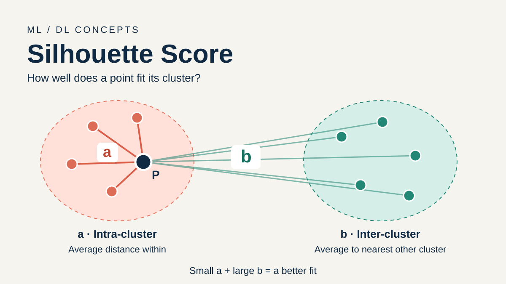

What are we trying to measure?
Imagine grouping customers by their shopping habits. A customer should have similar habits to the people in their group, and different habits from people in other groups. In clustering, we express this similarity as a distance: smaller means more similar.
The Silhouette Score checks how well points fit their assigned clusters. It ranges from −1 to 1. Higher values mean a better fit according to the distances you chose. You need the data and cluster assignments; you do not need ground-truth labels.

Two distances: a and b
a: distance within the cluster
Measure the distance from P to every other point in its own cluster, then take the average. Leave P itself out.
This is the intra-cluster distance. A small a means P is close to its group.
b: distance to the nearest other cluster
For each other cluster, average the distances from P to all points in that cluster. The smallest of those averages is b.
This is the nearest-cluster inter-cluster distance. A large b means the closest alternative group is still far away.
Be careful: b is not the distance to the nearest individual point or to a cluster center. If the average distances to three other clusters are 6, 9, and 12, then b is 6.
Turn those distances into a score
The top, b − a, asks: how much farther away is the other cluster? The bottom, max(a, b), divides by the larger distance to put the answer on a scale from −1 to 1.
| Distances | Score | Meaning for P |
|---|---|---|
| a is much smaller than b | Near 1 | Much closer to its own group. |
| a and b are similar | Near 0 | Neither group is clearly closer on average. |
| a is larger than b | Negative | Another group is closer on average; review this assignment. |
A negative value is a clue, not proof that a point is wrongly labeled. The score only sees distances; it does not know what the groups mean.
A small example, step by step
Suppose P has three other points in its cluster. Its distances to them are 1, 2, and 3.
- Find a: (1 + 2 + 3) / 3 = 2.
- Check the other clusters: distances to cluster B are 5, 6, and 7, giving an average of 6. Distances to cluster C are 8, 9, and 10, giving an average of 9.
- Choose b: min(6, 9) = 6. Cluster B is the nearest alternative.
- Calculate the score: (6 − 2) / 6 = 4 / 6 ≈ 0.67.
P is closer to its own cluster on average, so its score is positive. For comparison, if a = 6 and b = 2, its score would be −0.67. If a = b = 4, it would be 0.
From one point to the whole clustering
Calculate a silhouette value for each point, then average those values. That gives the overall Silhouette Score.
For example, if six points have scores 0.6, 0.7, 0.8, 0.5, 0.4, and 0.6, the overall score is 3.6 / 6 = 0.6. Each point gets equal weight, so a large cluster contributes more to the overall average than a small one.
Check individual scores too: a good overall average can hide a few poorly fitting points.
Calculate it in Python
Here is a tiny dataset on a number line. We assign 0, 1, and 2 to one cluster, and 8, 9, and 10 to another. Scikit-learn expects one row per point and one column per feature.
from sklearn.metrics import silhouette_score, silhouette_samples
X = [[0], [1], [2], [8], [9], [10]]
labels = [0, 0, 0, 1, 1, 1]
score = silhouette_score(X, labels)
point_scores = silhouette_samples(X, labels)
print(f"Overall score: {score:.3f}")
print([round(float(s), 3) for s in point_scores])Output:
Overall score: 0.831
[0.833, 0.875, 0.786, 0.786, 0.875, 0.833]For the point at 0, a = (1 + 2) / 2 = 1.5 and b = (8 + 9 + 10) / 3 = 9. Its score is (9 − 1.5) / 9 ≈ 0.833, matching the first value.
With a clustering model, pass its predicted labels instead. silhouette_score returns the overall average; silhouette_samples returns one value per point. Both use Euclidean distance by default.
Can it help choose the number of clusters?
Yes. Fit a model with several values of k, the number of clusters, and compare the scores on the same data, with the same preprocessing and distance metric.
from sklearn.cluster import KMeans
# X is the same feature matrix for every candidate.
for k in range(2, 5):
labels = KMeans(
n_clusters=k, random_state=42, n_init=10
).fit_predict(X)
if 2 <= len(set(labels)) < len(X):
print(k, round(silhouette_score(X, labels), 3))A higher score is evidence of better distance separation. Use it alongside cluster sizes, plots, and whether the groups are useful. It does not guarantee that you found the true number of groups. Scikit-learn's silhouette analysis example shows how to inspect the distribution of scores for each cluster.
A few things to remember
- No universal passing score. Compare sensible alternatives for your dataset instead of treating 0.5 or 0.7 as a fixed cutoff.
- Distance depends on feature scales. A feature measured in thousands can dominate one measured in decimals. Consider scaling when units differ, and use the same transformed data for clustering and scoring.
- Shape matters. The score tends to favor compact, convex groups. Curved or density-based clusters can receive lower scores even when they are useful; see the scikit-learn user guide.
- There must be something to compare. Scikit-learn requires between 2 and n − 1 distinct cluster labels for n points. A point alone in its cluster receives 0 by convention; when a and b are both zero, scikit-learn also returns 0 for that point.
Unlike Rand Index and Adjusted Rand Index, which compare two sets of cluster labels, Silhouette Score evaluates a clustering using distances in the data itself.
a = average distance to my own group. b = average distance to the nearest other group. Small a and large b give a high silhouette value. Average the point values to score the whole clustering.